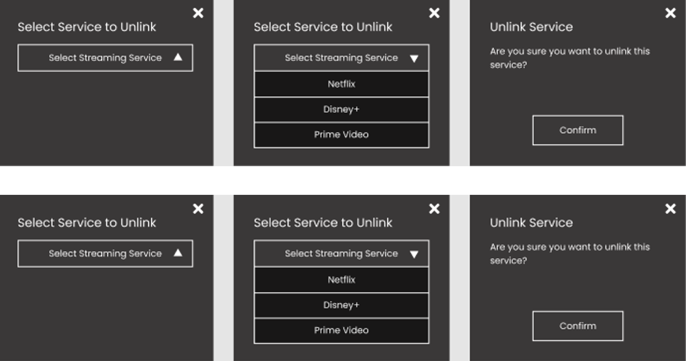

Critical Evaluation
Streaming Service Compiler Website with Social Features
In the last stage of the project, we prototyped our three remaining user tasks, as well as improved the four user tasks we had already prototyped in the previous stage. The improvements were based on feedback provided by our TA, Sam, and also on design ideas we came up with but were not able to implement due to limited time. For the four user tasks, we had several issues related to the visuals of our website. Specifically, due to some design choices to make the prototype look clean but also very minimal, our prototype ultimately looked dull. As a result, we made the following improvements:
- Used multiple different thumbnails for the movies, shows, and episodes to make our website look more realistic and add more color to it
- Replaced the labels for streaming services with their actual logos so that they pop out more and are more easily seen
- When switching from the regular screen size to full screen, we tweaked the sizes of the overlays to increase in size proportionately
As for the three newly prototyped user tasks, we approached them with the above improvements in mind so as not to make the same mistakes. Specifically, we approached with the following strategy:
- If possible, use and add color to elements that may be enhanced by it
- Make related overlays all the same size 
- Implement related elements with the same styling so a user can become familiarized with a consistent system (e.g., make all buttons look the same)

As for changes that should be done in the future, scrollbars should be added for elements that allow scrolling to indicate to the users that certain elements are scrollable. And if possible, more smart animation should be added to make the prototype look and feel more real (e.g., make slider button actually slide). Now, the changes that could be done include adding text input into our website using the well-known Anima plugin and making all placeholder descriptions more realistic (i.e., replace all dummy text).
For more details on this stage, check out our Stage 5 report or our online repository.